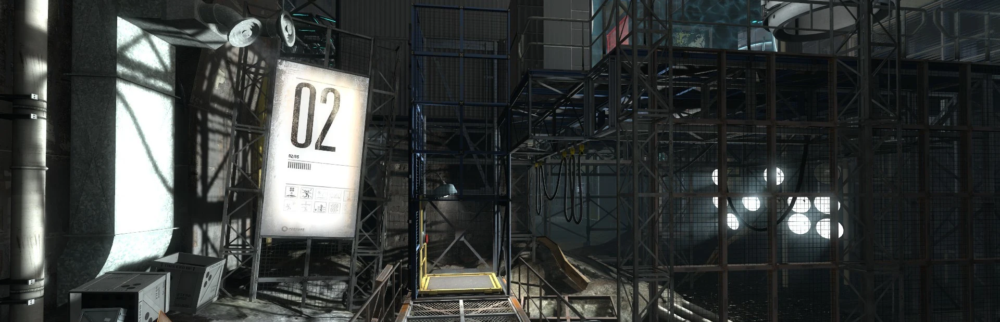

Rating System
I rate games based on a slightly-adapted version of Ross
Scott's
rating system, which he employs on his similar list of completed and uncompleted games. The
system is as follows:
Fantastic: My life is better because I played these games. It doesn't mean the game
has no
problems, but the highs are so high I don't care about the lows.
Good/Great: Any game with this rating has my full seal of approval. I had no regrets
playing this. Something about it kept it from being one of one of the best gaming
experiences I've ever had, but that's not a mark against it.
Hazy: If you ask me what I thought of a game and I have to stop and think about it,
then it
gets this rating. It's got something going for it, but I beat the game and still don't know
how I feel about it.
Love & Hate: These are games that would great if not for very serious issues. These
games
have extremely strong points underscored by very bad shortcomings.
Doubt: Games like this would probably be “Hazy,” but the longer I play them, the more
I want
them to be over. These are games that make me feel I was tricked into playing something
hollow. These games may still be competent, but not enjoyable.
Pass: These are not necessarily bad games. In fact, many of these can be great games.
What
it means is it's the wrong game. These are games that just aren't for me, but were still
finished.
Bad: These are games I played-through completely but I can in no way recommend. These
games
I probably didn't want to finish but still did out of some sense of resentment or pride.
Retired: These are games that have been retired from the queue due to a misalignment
of
taste or a shortfall of quality.
N/A: Entries with no rating are replays.
Rewind
Jan 14, 2024
Portal: Revolution (2024)
Apr 17, 2024
Cyberpunk 2077: Phantom Liberty (2023)

Jun 21, 2024
Final Fantasy XIV: Endwalker (2020)

Aug 18, 2024
Final Fantasy XIV: Dawntrail (2024)
Oct 5, 2024
Cyberpunk 2077 (2020)